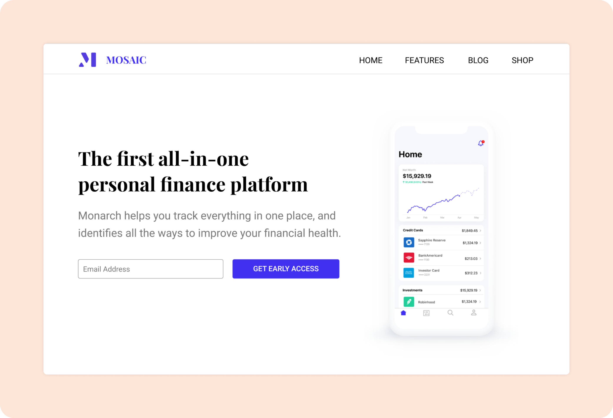
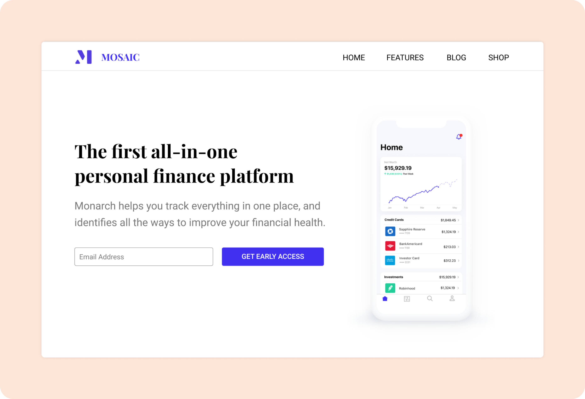

My Role
I was sole designer for both websites and worked with clients to conduct design and development reviews. I created wireframes for both projects, mapped out website content, designed and delivered two responsive websites.
Final Product
Reploy Website Mosaic Website

Mosaic Website
